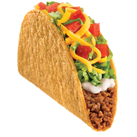
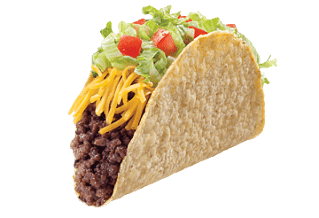
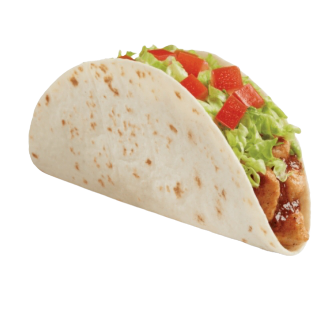
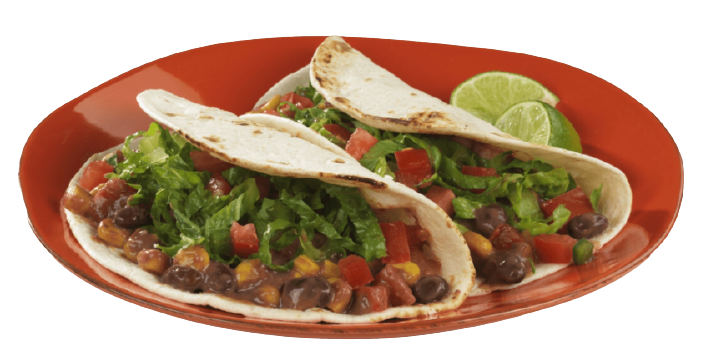
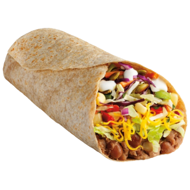

THE TASTE EXPLOSION
Check out some of the many ways you can consume thousands of calories of meat filler, powdered beans and processed cheese this month.
all the intestinally devastating properties of central American street food with none of the taste!
Taco Bomb is more than just a fast food restaurant - it's a 24-hour commitment. The secret of our patented real beef-inspired special taco filler beef-ish has kept late night party goers and gastroenterologists guessing for the last 30 years. is it protein? is it a carbohydrates ? is it a bio weapon? would it survive the apocalypse? Why does it taste SO good ?
Taco Bomb is Mexican food done right, the American way, One set of four basic ingredients offered in a hundred different formats, smthered in cheese.